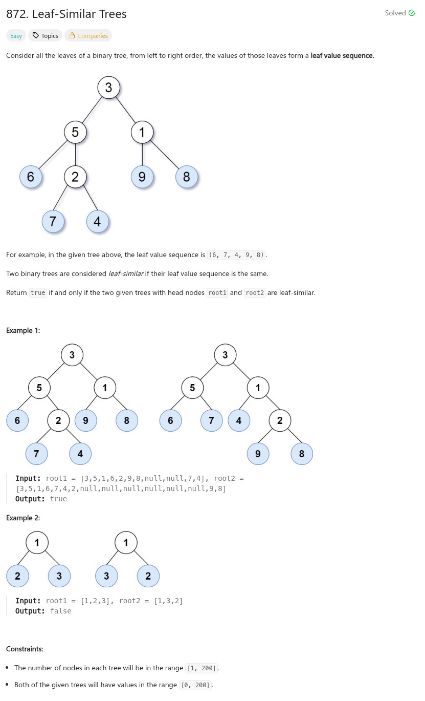

參考資訊：
https://www.cnblogs.com/grandyang/p/10771842.html
題目：

/**
* Definition for a binary tree node.
* struct TreeNode {
* int val;
* struct TreeNode *left;
* struct TreeNode *right;
* };
*/
int travel(struct TreeNode *n, int *r_buf, int *r_cnt)
{
if (!n) {
return 0;
}
if (!n->left && !n->right) {
r_buf[(*r_cnt)++] = n->val;
return 0;
}
return travel(n->left, r_buf, r_cnt) + travel(n->right, r_buf, r_cnt);
}
bool leafSimilar(struct TreeNode *root1, struct TreeNode *root2)
{
int cc = 0;
int cnt[2] = { 0 };
int buf[2][201] = { 0 };
travel(root1, &buf[0][0], &cnt[0]);
travel(root2, &buf[1][0], &cnt[1]);
if (cnt[0] != cnt[1]) {
return false;
}
for (cc = 0; cc < cnt[0]; cc++) {
if (buf[0][cc] != buf[1][cc]) {
return false;
}
}
return true;
}